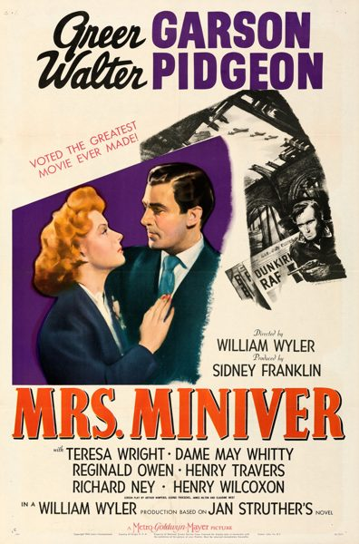

THE STANFORD THEATRE
Now Showing
·
Upcoming
·
Past
·
Search
October 12 - December 24, 2011
Fall 2011
22 bills
October 12 - 14
The Gay Divorcee (1934)
107 min
Top Hat (1935)
101 min
October 15 - 16
The Third Man (1949)
93 min
Citizen Kane (1941)
119 min
October 19 - 21
Grand Hotel (1932)
113 min
Anna Christie (1930)
89 min
October 22 - 23
To Kill a Mockingbird (1962)
129 min
Black Legion (1937)
83 min
October 26 - 28
On the Waterfront (1954)
108 min
A Face in the Crowd (1957)
125 min
October 29 - 30
Forbidden Planet (1956)
99 min
The Time Machine (1960)
99 min
November 2 - 4
Pride and Prejudice (1940)
117 min

Mrs. Miniver (1942)
134 min
November 5 - 6
Jason and the Argonauts (1963)
104 min
The Seventh Voyage of Sinbad (1958)
90 min
November 9 - 11
Winchester '73 (1950)
92 min
Call Northside 777 (1948)
112 min
November 12 - 13
Lost Horizon (1937)
97 min
Goodbye, Mr. Chips (1939)
110 min
November 16 - 18
It Happened One Night (1934)
105 min
Susan Lenox: Her Fall and Rise (1931)
76 min
November 19 - 20
Mr. Smith Goes to Washington (1939)
129 min
Mr. Deeds Goes to Town (1936)
115 min
November 23 - 25
A Bill of Divorcement (1932)
74 min
Morning Glory (1933)
74 min
November 26 - 27
Camille (1937)
108 min
Ninotchka (1939)
110 min
November 30 - December 2
Double Indemnity (1944)
107 min
The Bitter Tea of General Yen (1933)
87 min
December 3 - 4
The African Queen (1951)
105 min
Desk Set (1957)
103 min
December 7 - 9
Sunset Boulevard (1950)
110 min
Five Graves to Cairo (1943)
100 min
December 10 - 11
Now, Voyager (1942)
117 min
The Letter (1940)
95 min
December 14 - 16
Little Women (1933)
115 min
Stage Door (1937)
92 min
December 17 - 18
Great Expectations (1946)
118 min
Brief Encounter (1946)
85 min
December 21 - 23
The Shop Around the Corner (1940)
99 min
The Wizard of Oz (1939)
102 min
December 24
It's a Wonderful Life (1946)
125 min